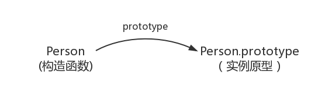
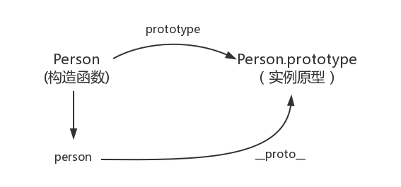
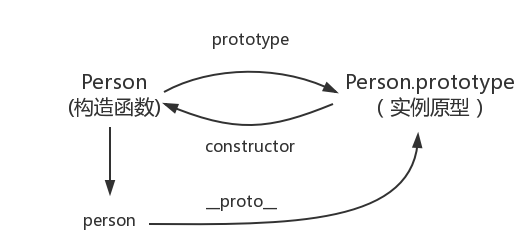
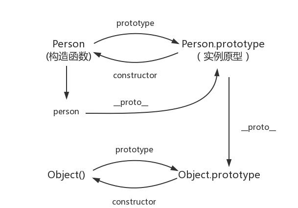
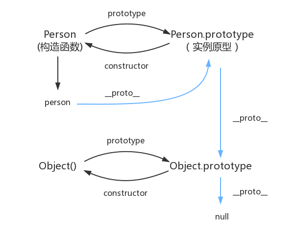

js的原型和原型链
构造函数创建对象：
1 | function Person() { |
Person 就是一个构造函数，我们使用 new 创建了一个实例对象 person
prototype
每个函数都有一个 prototype 属性
每一个JavaScript对象(null除外)在创建的时候就会与之关联另一个对象，这个对象就是我们所说的原型，每一个对象都会从原型”继承”属性。
1 | function Person() { |

image.png
proto
每一个JavaScript对象(除了 null )都具有的一个属性，叫proto，这个属性会指向该对象的原型
1 | function Person() { |

image.png
constructor
每个原型都有一个 constructor 属性指向关联的构造函数 实例原型指向构造函数
1 | function Person() { |

image.png
1 | function Person() { |
实例与原型
1 | function Person() { |
在这个例子中，我们给实例对象 person 添加了 name 属性，当我们打印 person.name 的时候，结果自然为 Daisy。
但是当我们删除了 person 的 name 属性时，读取 person.name，从 person 对象中找不到 name 属性就会从 person 的原型也就是 person.proto ，也就是 Person.prototype中查找，幸运的是我们找到了 name 属性，结果为 Kevin。
原型与原型
1 | var obj = new Object(); |

image.png
原型链
console.log(Object.prototype.__proto__ === null) // true

image.png
JavaScript 默认并不会复制对象的属性，相反，JavaScript 只是在两个对象之间创建一个关联，这样，一个对象就可以通过委托访问另一个对象的属性和函数，所以与其叫继承，委托的说法反而更准确些